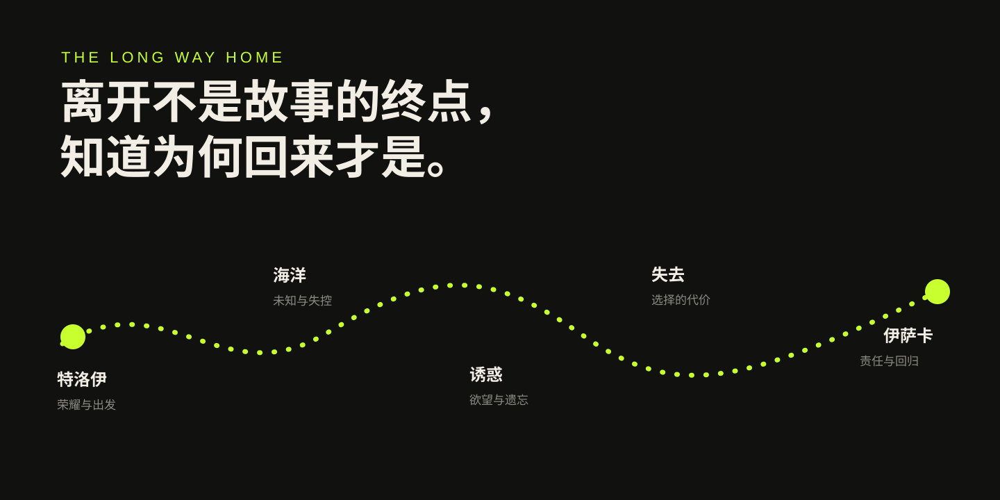
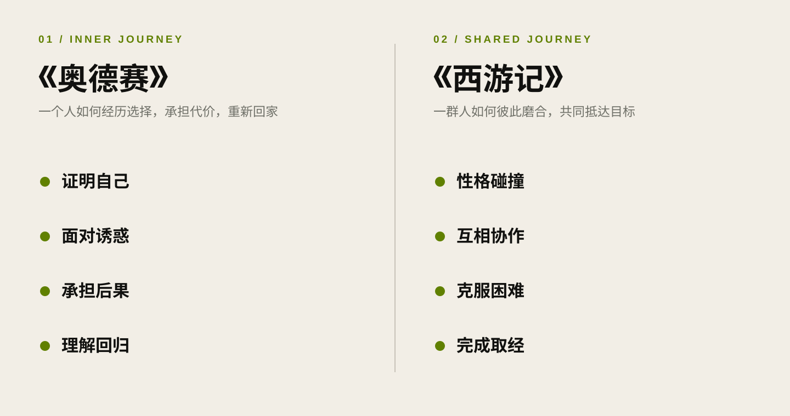

Personal Growth / 2026.08.30
从《奥德赛》想到的：成长、责任与回归
《奥德赛》表面是一场跨越海洋的冒险，真正让我在意的，却是一个人在漂泊、诱惑与失去之后，如何重新理解家庭、责任与回归。
今天看了电影《奥德赛》。它当然是一部足够壮阔的电影：战争、海洋、怪物、神明与人的命运，都被放进了一段漫长的归途。但走出电影院后，我记住的并不只是那些奇观，而是一个很朴素的问题：一个男人究竟要经历什么，才算真正成熟？
以下会谈到电影和原作的主要情节。
这不是一次出征，而是一次回家
克里斯托弗·诺兰的《奥德赛》改编自荷马史诗，由马特·达蒙饰演奥德修斯，安妮·海瑟薇饰演珀涅罗珀，汤姆·赫兰德饰演他们的儿子忒勒马科斯。官方把它定义为一部使用新一代 IMAX 胶片技术、跨越多地拍摄的“神话动作史诗”。这些信息很容易让人先注意到它的规模，但这个故事最重要的方向，其实不是“向外征服”，而是“向内返回”。
特洛伊战争结束后，奥德修斯本应回到故乡伊萨卡。那原本只是一段航程，却变成了十年的漂泊。他遇到独眼巨人、女巫喀耳刻和塞壬，也不断失去同伴。与此同时，珀涅罗珀留在家中抵挡求婚者，忒勒马科斯则在一个父亲长期缺席的家庭里长大，并开始寻找父亲的下落。
所以《奥德赛》其实有三条同时发生的成长线：一个父亲学习如何回来；一个妻子用等待和智慧守住家庭；一个儿子在父亲缺席时开始成为自己。

我根据电影与原作主题整理的概念图，并非地理路线。
奥德修斯并不是一个完美英雄
奥德修斯最特别的地方，是他不只依靠力量。他聪明、善于谋划，能够从困境中找到出口。但他的聪明也常常和骄傲连在一起。
面对独眼巨人时，他用计谋脱身，却又因为想让对方知道是谁战胜了自己而暴露姓名。一个原本已经解决的问题，因为无法克制证明自己的冲动，又制造出更漫长的灾难。
这个细节让我觉得很真实。年轻时，我们很容易把“让别人知道我是谁”看得很重要。做成一件事之后，希望被看见；赢过别人之后，希望对方承认。可真正成熟的人，未必需要在每一场胜利后留下名字。他开始知道，解决问题比证明自己重要，带大家平安回去比个人的荣耀重要。
奥德修斯的成长也不是一条顺利向上的直线。他会判断错误，会受到诱惑，会为自己的选择付出代价。英雄不是因为从不犯错才成为英雄，而是因为经历后果以后，终于开始看清自己。
诱惑真正考验的，是一个人是否记得目的地
《奥德赛》里的危险不全是怪物。有些危险看起来甚至很美好：让人忘记故乡的安逸、能够预知一切的歌声，以及无需再承担现实责任的生活。
这些情节放在今天依然成立。我们不一定会遇到塞壬，但会遇到无数让注意力偏离方向的声音；不会被困在一座神话岛屿，却可能停留在一个舒适但不再成长的位置。
诱惑并不总是在劝一个人做坏事。更多时候，它只是让人暂时忘记自己为什么出发。
这也是我理解的成熟：不是从此没有欲望，而是在欲望出现时，仍然记得自己的目的地；不是拒绝世界所有可能，而是知道有些选择虽然吸引人，却会让自己离真正重要的东西越来越远。
真正的成熟，或许不是终于可以去任何地方，而是经历过远方之后，知道自己为什么要回来。
“回家”不是退回原点
《奥德赛》的核心词是 nostos，意为“归乡”或“回归”。有意思的是，英文里的 nostalgia 也来自“归乡”和“痛苦”两个词根。想家并不只是怀念过去，它本身也包含无法立刻回去的痛苦。
奥德修斯拒绝停留，选择继续回到并不完美的伊萨卡。家之所以重要，不是因为那里没有困难，而是因为那里有属于他的关系、责任和生活。
但归来绝不等于退回十年前。战争和漂泊已经改变了他，家中的人也没有停在原地。珀涅罗珀不是被动地等待，忒勒马科斯也不再是那个需要父亲保护的孩子。真正的回归，是让几个已经改变的人重新认识彼此，再重新建立关系。
这让我想到，很多时候我们把远方理解为成长，把回家理解为妥协。可《奥德赛》给出了另一种答案：能够出发需要勇气，经历世界需要能力，而在经历一切之后仍愿意回来、重新承担具体的生活，也许需要更大的勇气。
为什么我会想到《西游记》
看电影时，我也不断想到东方神话，尤其是《西游记》。这只是我的直观阅读感受，并不是要给两种文化下一个绝对结论。
《西游记》当然也在讲成长。孙悟空从大闹天宫时的桀骜不驯，到取经途中逐渐学会克制、合作和承担责任，本身就是非常明显的变化。唐僧、猪八戒和沙僧也各自带着弱点前进。
但在我的阅读记忆里，《西游记》最吸引人的首先是一个接一个的奇遇：不同的妖怪、法术、骗局和解法，以及师徒四人的关系。它更像是一群性格不同的人，如何在共同目标下完成一段旅程。成长藏在一次次磨合里。
《奥德赛》给我的感受则更集中在个人内部：一个男人如何面对荣耀与虚荣，如何抵抗让自己忘记归途的诱惑，如何重新理解妻子、孩子和家庭。它把“成为英雄”与“成为丈夫、父亲和一个能够承担后果的人”放在了一起。

这不是文化高下的判断，而是我在两部作品中感受到的叙事重心。
两种故事并不是一边有成长、一边没有成长，而是把镜头放在了不同的位置：《西游记》让我看见同行、磨合和共同目标，《奥德赛》让我看见选择、代价与回归。一个人的成长既需要内部的自省，也需要在关系中不断调整自己。
男性成长，不只是变得更强
这部电影让我重新思考“男性成长”这个说法。
我们经常把男性的成熟和更强的能力联系起来：可以解决问题，可以保护别人，可以独自面对世界。但如果只有力量，没有克制；只有胜利，没有对后果的承担；只有远方，没有值得回去的关系，那么这种强大依然是不完整的。
奥德修斯的故事真正打动我的，是它让一个传统英雄最终面对非常日常的命题：如何做一个丈夫，如何做一个父亲，如何回到生活，如何修复自己长久缺席留下的空白。
从追求自由，到理解边界；从证明自己，到承担后果；从渴望被所有人看见，到知道应该守护哪些具体的人——这或许才是成熟更难的部分。
写在最后
神话把成长变成了海洋、风暴、怪物和十年的漂泊。现实中的我们不会经历同样的旅程，但会遇到自己的诱惑、迷失和选择。
有些人一直在出发，却没有想过要去哪里；有些人拥有了更多能力，却没有学会如何承担；还有些人在追逐远方的过程中，逐渐忘记了最初为何出发。
看完《奥德赛》，我更愿意把成熟理解为一种清醒：知道自己能做什么，也知道什么不应该做；知道外面的世界很大，也知道哪些关系不能失去；在走过足够远的路以后，仍能找到回去的方向。
远方证明一个人有能力离开，归来则证明他终于理解了自己。
资料说明：电影主创、演员及制作信息参考 Universal Pictures 官方介绍；人物与电影情节背景参考 Entertainment Weekly 的官方剧照报道；关于 nostos 与归乡主题的解释参考 The Open University 的《奥德赛》公开课程。正文观点均为个人观影后的理解。